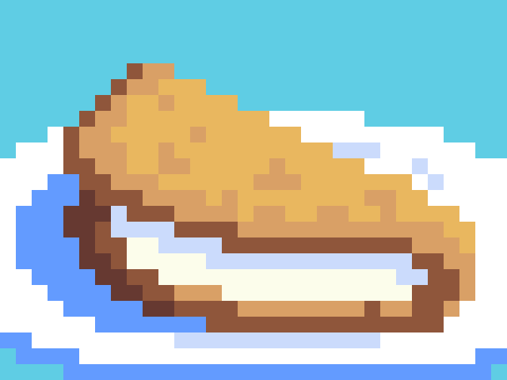

Cheese Cachapas
Ingredients
- 2 cups fresh corn, cut from the cob
- 1 egg
- 1/2 cup of milk
- 4 tablespoons of cornmeal
- 1 tablespoon of sugar
- 1 teaspoon of salr
- 2 tablespoon of butter
- 8 oz of sliced fresh mozzarella cheese
Steps
- Add fresh corn, egg, milk, cornmeal, sugar, and salt in a blender and blend until a thick paste forms. Let it sit for 10 minutes. Add more cornmeal if mixture is too thin
- Preheat a frying pan on medium heat. Add butter when it's hot
- Pour 1/3 cup of batter into the frying pan, in a circle shape.
- Cook for 4-5 minutes and flip with a spatula. Cook for 3 more minutes until the cachapa is golden brown.
- Place sliced mozzarella on one half of the cachapa and let it melt. Fold the other half over the cheese and spread some butter on top.
Go back